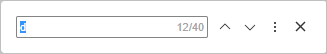
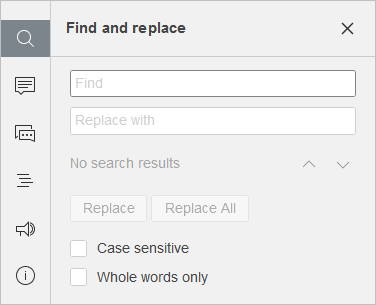

Funkcija pretrage i zamene
Da biste pronašli potrebne znakove, reči ili fraze u trenutno uređivanom dokumentu, kliknite na ikonu koja se nalazi na levoj bočnoj traci Document Editora, na ikonu u gornjem desnom uglu, ili koristite kombinaciju tastera Ctrl+F (Command+F za macOS) da otvorite mali panel za pretragu ili Ctrl+H da otvorite prošireni panel.
Mali panel Pretraga otvoriće se u gornjem desnom uglu radnog prostora. Panel sadrži polje za unos pojma za pretragu, broj pronađenih rezultata i kontrole za prelazak na prethodni ili sledeći rezultat, kao i dugme za zatvaranje.

Za pristup naprednim podešavanjima kliknite na ikonu ili koristite kombinaciju tastera Ctrl+H.
Otvara se panel Pretraga i zamena:

- Unesite pojam za pretragu u odgovarajuće polje Pretraga.
- Ako želite da zamenite jedan ili više pronađenih pojmova, unesite tekst zamene u polje Zameni sa. Možete izabrati da zamenite samo trenutno označeni pojam ili sve pojave klikom na odgovarajuća dugmad Zameni i Zameni sve. Dugme Zameni takođe se nalazi na kartici Početak.
- Za kretanje između pronađenih pojmova koristite strelice. Dugme prikazuje sledeći pojam, dok vodi na prethodni.
-
Odredite parametre pretrage označavanjem potrebnih opcija ispod polja za unos:
- Razlikuj velika i mala slova – koristi se da bi se pronašli samo pojmovi upisani istim slovima kao vaš unos (npr. ako unesete 'Editor' i uključite ovu opciju, reči poput 'editor' ili 'EDITOR' neće biti pronađene).
- Samo cele reči – koristi se da označi samo cele reči.
Sve pojave biće istaknute u dokumentu i prikazane kao lista u panelu Pretraga sa leve strane. Možete koristiti listu da pređete na određeni pojam ili navigacione tastere i .
Document Editor podržava pretragu specijalnih znakova. Da biste pronašli specijalan znak, unesite ga u polje za pretragu.
Lista specijalnih znakova koji se mogu koristiti u pretrazi
| Specijalni znak | Opis |
| ^l | Prelom reda |
| ^t | Tabelatorski znak |
| ^? | Bilo koji simbol |
| ^# | Bilo koja cifra |
| ^$ | Bilo koje slovo |
| ^n | Prelom kolone |
| ^e | Završna napomena |
| ^f | Fusnota |
| ^g | Grafički element |
| ^m | Prelom stranice |
| ^~ | Nedeljivi spojnik |
| ^s | Nedeljivi razmak |
| ^^ | Ispis samog znaka kape (caret) |
| ^w | Bilo koji razmak |
| ^+ | Duga crta (em dash) |
| ^= | Kraća crta (en dash) |
| ^y | Bilo koja crta |
Specijalni znakovi koji se mogu koristiti i za zamenu:
| Specijalni znak | Opis |
| ^l | Prelom reda |
| ^t | Tabelatorski znak |
| ^n | Prelom kolone |
| ^m | Prelom stranice |
| ^~ | Nedeljivi spojnik |
| ^s | Nedeljivi razmak |
| ^+ | Duga crta (em dash) |
| ^= | Kraća crta (en dash) |